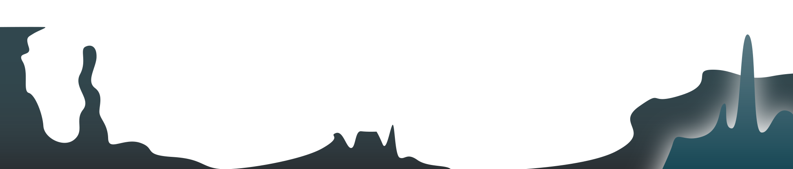
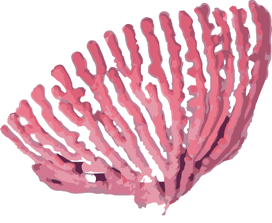
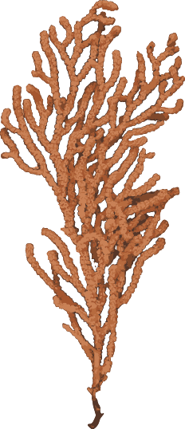
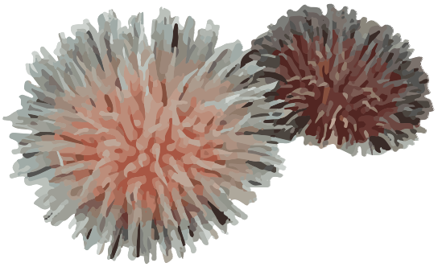

Close
Mola Mola
The ocean sunfish or common mola is one of the heaviest known bony fishes in the world. Adults typically weigh between 247 and 1,000 kg. The species is native to tropical and temperate waters around the world. It resembles a fish head with a tail, and its main body is flattened laterally.

Close
Fangtooth Fish
Fangtooth fish are dark-colored fish that have small bodies, big heads, large fang-like teeth, and live in deep ocean water. They have small eyes and scientists don't think their eyesight is very good. laterally.
Close
Sea Pig
Sea pigs are deposit or detrital feeders, eating bits of decaying plant and animal material found in deep sea mud. Their mouths are surrounded by a ring of feeding tentacles that they use to sift through the mud and grab onto food.

Close
Spider Crab
The Japanese spider crab (Macrocheira kaempferi) gets its name from its resemblance to a spider. It has an orange body with white spots on its legs. The short, stubby eye stalks are located on the front of the carapace and two thin spines stick out between them.
Close
Dumbo Octopus
The dumbo octopus (Grimpoteuthis ) is a deep sea animal that lives on the ocean floor at extreme depths of 9,800 to 13,000 feet. They are small animals, around 8 inches tall, and have a pair of fins located on their mantle—their namesake—and webbing between their arms.


